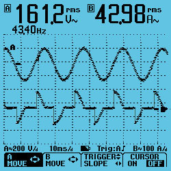
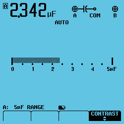
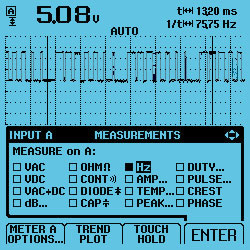
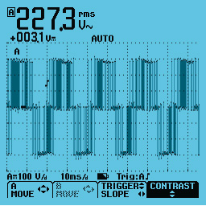
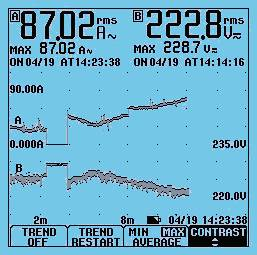

|
|
|
ScopeMeter® serie 120: Tres instrumentos en uno
El ScopeMeter de la serie 120 es una robusta herramienta para la localización de averías en entornos industriales. Integra un osciloscopio, un multímetro y un 'registrador' sin papel en un único equipo, asequible y fácil de usar. Encuentre rápidamente respuestas a problemas en máquinas, instrumentación y sistemas de control y alimentación eléctrica.
 
|
 ScopeMeter® serie 120 : Tan sencillo como ‘un, dos, tres’ ScopeMeter® serie 120 : Tan sencillo como ‘un, dos, tres’
- Osciloscopio digital de dos canales de 40 MHz ó 20 MHz
- 2 multímetros digitales de verdadero valor eficaz y 5.000 cuentas
- Mediciones automáticas
- TrendPlot™: registrador de dos canales
- La sencillez de disparo Connect-and-View™ para un funcionamiento "manos libres"
- Cables de prueba apantallados para los modos de osciloscopio, medidas de resistencia y continuidad
- Con los instrumentos Fluke 124 y 125 se incluye una sonda de tensión 10:1 para medidas de alta frecuencia
- Duración de las baterías: hasta 7 horas
- Clasificación de seguridad CAT III 600 V
- Interfaz aislada ópticamente para conexión al PC
- Equipo compacto y muy robusto
- El Fluke 125 proporciona medidas adicionales sobre la potencia y el estado del bus. Si desea obtener más información acerca de las funciones de comprobación del estado del bus del Fluke 125, haga clic aquí.
|
En los complejos sistemas actuales, una medida numérica no proporciona suficiente información para determinar la causa de un fallo. Anomalías en las señales, caídas de tensión y fallos imprevistos que pueden provocar la parada de una máquina, se ven mejor con un osciloscopio. Los ScopeMeter Serie 120 satisfacen las actuales necesidades de medir y comprobar simultáneamente formas de onda. El exclusivo modo de disparo Connect-and-View™ muestra automáticamente formas de onda estables para prácticamente cualquier señal imaginable. Realmente es tan sencillo como un, dos, tres.
Un instrumento tres en uno
|  |
| Las medidas de ambos canales permiten ver la lectura numérica y forma de onda al mismo tiempo |
El ScopeMeter de la serie 120 combina un osciloscopio digital de 40 ó 20 MHz, multímetro digital de verdadero valor eficaz y un registrador TrendPlot™ de dos canales en un instrumento compacto alimentado por baterías. Deje atrás todos sus demás instrumentos de medida porque el ScopeMeter serie 120 es la única que necesitará.
Una sonda de medida para todas las medidas
|  |
| Compruebe el condensador de arranque de un motor con el ScopeMeter serie 120 |
Formas de onda de alta frecuencia, multímetro, medidas de capacidad y resistencia y comprobaciones de continuidad. Todo esto queda cubierto por los cables de prueba apantallados. Sin pérdida de tiempo para buscar o intercambiar cables. Los accesorios que se incluyen permiten la conexión a puntos de medida de cualquier tamaño.
La confianza de poder hacer mejor su trabajo
|  |
| Abra el menú de medidas y seleccione una de las 26 medidas automáticas |
Trabajar con prisas en un sitio con poco espacio o de difícil acceso significa que necesita poder concentrarse en su trabajo y no en la herramienta de medida que lleva en sus manos. Esta es la razón de que el ScopeMeter 120 disponga del disparo automático Connect-and-View (consulte el panel lateral). Con él no tendrá que preocuparse por el disparo y los ajustes del instrumento y tendrá en la pantalla toda la información necesaria para hacer correctamente su trabajo.
Más movilidad gracias a la alimentación por batería
Hasta siete horas de funcionamiento con batería le liberan de la dependencia de la conexión a la red y le proporcionan una absoluta movilidad. Su formato de mano y su ligero peso de tan sólo 1,2 kg hacen que sea fácil de transportar cómodamente en la mano. La carcasa robusta y a prueba de caídas asegura una larga duración y un funcionamiento fiable en los entornos industriales más agresivos.
Medidas flotantes con seguridad certificada
Tanto el ScopeMeter de la serie 120 como sus cables de prueba apantallados están certificados y homologados para medidas en sistemas industriales de alimentación eléctrica a 600 V según CAT III.. Con la sonda VPS40, se pueden efectuar medidas de hasta 1.000 V según CAT II. A través del interfaz RS-232 ópticamente aislado, el ScopeMeter 120 puede conectarse con seguridad a una impresora para impresión directa o a un PC para documentación y análisis posteriores con el software FlukeView..
Disparo Connect-and-View™ para obtener una visualización instantánea y estable
|  |
| La función Connect-and-View captura hasta las señales más complejas, como las de un variador de velocidad. |
Los usuarios de osciloscopios saben muy bien lo difícil que puede llegar a ser sincronizar una señal. Los ajustes incorrectos dan resultados inestables y, a veces, erróneos. El exclusivo disparo Connect-and-View™ de Fluke reconoce patrones de señales y configura automáticamente el disparo adecuado. Proporciona una visualización estable, fiable y repetible de casi cualquier señal, incluidas las señales de control y variadores de velocidad, sin necesidad de pulsar un botón. El equipo reconoce los cambios de señal instantáneamente y los ajustes se modifican para obtener, de nuevo, una visualización estable. Benefíciese de la velocidad y comodidad al medir varios puntos de prueba separados.
Utilice TrendPlot™ para registrar y analizar rápidamente fenómenos intermitentes
|  |
| Los cursores y el zoom le ayudan a analizar los datos capturados por la función TrendPlot |
Los fallos más difíciles de localizar son aquellos que ocurren de vez en cuando: intermitentes. Pueden ser debidos a conexiones defectuosas, al polvo, la suciedad, la corrosión o, simplemente, a conectores o cables rotos. Usted quizá no esté allí para verlo, pero el ScopeMeter de Fluke sí estará. Su “registrador sin papel puede trazar los valores máximos y mínimos y la media a lo largo del tiempo, durante un período de hasta 16 días. Sus dos entradas permiten trazar cualquier combinación de tensión, intensidad, temperatura, frecuencia y fase, con indicación de fecha y hora, para indicarle rápidamente la causa de dichos fallos.
Basado en el 124, el Fluke 125 ofrece funciones de comprobación adicionales para medidas en maquinaria y buses industriales. Las funciones de comprobación del estado del bus se estudian en una sección independiente, consúltelas aquí.
Además, el 125 ofrece las siguientes funciones adicionales para la realización de pruebas en maquinaria industrial:
- Medidas de potencia para sistemas monofásicos y trifásicos equilibrados. El Fluke 125 puede presentarle directamente la Potencia Total (Vatios), la Potencia Aparente (VA), la Potencia Reactiva (VAR) y el Factor de Potencia (PF), en una amplia gama de frecuencias de trabajo, incluidas aquellas que se dan en los variadores de velocidad e inversores. Por consiguiente, usted podrá ver fácilmente los efectos en las diversas medidas de potencia durante el arranque o en condiciones de funcionamiento cambiantes. De forma estándar, se incluye una pinza amperimétrica.
- El modo de armónicos muestra los armónicos hasta el 33 para facilitar la detección de averías, por ejemplo, con grandes cargas no lineales.
- Lecturas de RPM y Hz para aplicaciones con motores eléctricos y de combustión.
- Vac pwm para uso en salidas de variadores de velocidad, leyendo la tensión de salida real que experimenta el mismo motor.
- Medidas de baja impedancia con una resolución de 0,01 ohmios para su utilización en las bobinas del motor y similares.
|
Software FlukeView® para documentación, archivo y análisis

El software FlukeView® para Windows® le ayudará a sacar más partido de su ScopeMeter:
- Documentación – Transfiera formas de ondas, pantallas y datos de medidas del ScopeMeter a un PC. Imprima o importe los datos en sus informes.
- Texto añadido a la configuración individual del ScopeMeter – proporcione ayuda al operario cuando recupere una configuración.
- Archivo – Cree su propio archivo de formas de ondas, incluidos sus comentarios para facilitar las consultas y comparaciones. Guarde ciclos completos de reproducción para analizar cambios de formas de onda. Guarde el contenido de la memoria del ScopeMeter en su PC como copia de seguridad.
- Comparación de formas de onda – guarde formas de onda de referencia en el PC o envíe una referencia al ScopeMeter para comparar las formas de onda y efectuar comprobaciones ‘Pasa / No pasa’.
- Análisis – Utilice cursores, haga análisis de espectro (FFT) o exporte datos a otros programas de análisis. Los ScopeMeter se pueden conectar a un PC a través de un cable de interfaz RS232 o USB ópticamente aislado.
|
|
|
| Especificaciones |
| Ancho de banda del osciloscopio |
| Fluke 125: |
40 MHz |
| Fluke 124: |
40 MHz |
| Fluke 123: |
20 MHz |
| | Multímetro de verdadero valor eficaz de dos canales |
|
VDC, VAC, VAC+VDC, Ohmios, Continuidad, Comprobación de diodos |
|
Corriente, °C, °F, Capacidad, dBV, dBM, Factor de cresta, Touch Hold y Ajuste a cero |
| | Registro TrendPlot |
|
Escala automática vertical y compresión temporal. |
|
Presentación de lecturas reales de mínimos, máximos y promedio. |
| | Cursores |
| Fluke 125/124: |
∆T, 1/∆T, V, ∆V, tiempo de subida y caída |
| | Máx. velocidad de muestreo en tiempo real | | | Velocidad de muestreo equivalente |
|
hasta 2,5 GS/s (125, 124) o 1,25 GS/s (123). |
| | Canales y digitalizadores | | | Rango de la base de tiempos |
| Fluke 125/124: |
20 ns -1 min/div |
| Fluke 123: |
10 ns -1 min/div |
| | Sensibilidad de entrada | | | Tipos de disparo |
|
Connect-and-View™, Libre, Disparo único, Flanco, Vídeo, Externo |
| | Captura de picos | | | Medidas del osciloscopio |
|
Mediciones automáticas: 26 (todos los instrumentos) Además, el Fluke 125 dispone de funciones de medida adicionales para la potencia (W), VA, VAR y el factor de potencia (PF) para sistemas eléctricos monofásicos y trifásicos equilibrados (en triángulo). |
| | Modo de armónicos |
|
El Fluke 125 tiene la capacidad de analizar el contenido de armónicos de las señales eléctricas. Obtenga más información a continuación. |
| | Longitud máxima de registro |
|
512 mín/máx puntos por entrada |
| | Memoria |
| Fluke 125/124: |
20 pantallas y configuraciones |
| Fluke 123: |
10 pantallas y configuraciones |
|
| Funciones adicionales de medida de la potencia (sólo Fluke 125) |
| Tipos de medida: |
| • |
Vatios, |
| • |
VA, |
| • |
VAR, |
| • |
Factor de potencia (PF) |
| | Configuración eléctrica: |
|
Suministro eléctrico monofásico o trifásico equilibrado (configuración en triángulo) |
| | Medición de la tensión |
|
Canal A; mediante STL120, sonda de tensión o entrada directa |
| | Máxima tensión segura de trabajo |
|
Canal B, mediante i400s (incluida) u otra pinza amperimétrica compatible |
| | Sensibilidad de shunt o pinza amperimétrica: |
|
0,1 / 1 / 10 / 100 / 1.000 mV/A, 10 mV/mA y 400 mV/A. |
|
| Modo de armónicos (sólo Fluke 125) |
| |
|
Convierte la información de forma de onda en una indicación de armónicos (mediante procesamiento FFT), que muestra los valores de amplitud relativa desde el primer armónico hasta el 33º. |
| | Forma de onda analizada: |
|
La forma de onda de tensión (Canal A), la forma de onda de corriente (Canal B) o la potencia (Canal A x Canal B) se generan automáticamente. |
| | Rango de frecuencia de armónicos: |
|
CC hasta el armónico 33º (fundamental hasta 60 Hz); |
|
CC hasta el armónico 24º (fundamental hasta 400 Hz). |
| | Pantalla |
|
Barra gráfica para visualizar del primer armónico al 33º y CC; la amplitud se presenta en % relativo a la fundamental. |
| | Medidas: |
|
Amplitud relativa de armónicos independientes; |
|
THD en % r o % f. |
|
| Especificaciones de ambiente |
| Temperatura de trabajo | | | Temperatura de almacenamiento | | | Altitud de trabajo | |
| Homologación de seguridad |
| Seguridad eléctrica |
|
Seguridad EN61010-1 CAT III 600 V |
|
| Especificaciones mecánicas y generales |
| Tamaño | | | Peso | | | Garantía |
|
3 años en piezas y mano de obra (un año en accesorios) |
| | Duración de la batería |
|
7 horas con la batería NiMH |
| | Interfaz RS-232/USB |
|
Optoaislado a través de PM9080/OC4USB opcional para conexión a impresora o PC |
|
|
| Nombre del modelo | Descripción | Listas de precios | | Fluke 125 |
ScopeMeter Industrial (40 MHz)
Todos los modelos incluyen:
- AC120 Pinzas de cocodrilo
- BB120 Adaptador tipo banana a BNC
- Manual de puesta en funcionamiento
- PM 8907 Cargador de batería/adaptador de tensión de línea
- STL120 Juego de cables de prueba apantallados
- Manual del usuario (CD-ROM)
- Manual de uso (en CD-ROM)
|
Fluke 124/125:
- VPS40 Sonda de tensión, 40 MHz, 10:1
|
Los modelos Fluke 125 también incluyen:
- Pinza amperimétrica de CA I400s
|
| | Fluke 125/S |
ScopeMeter Industrial (40 MHz) + SCC120
SCC 120:
- C120 Estuche rígido
- OC4USB Cable interfaz
- SW90W Software FlukeView (ScopeMeter)
|
| | Fluke 124 | ScopeMeter Industrial (40 MHz)
| | Fluke 124/S | ScopeMeter Industrial (40 MHz) + SCC120
| | Fluke 123 | ScopeMeter Industrial hand held oscilloscope (20 MHz) | | Fluke 123/S | ScopeMeter Industrial (20 MHz) + SCC120
|
| Clips | | AC120 | AC120 Juego de pinzas de cocodrilo para la serie 120 (1 roja, 1 gris, 1 negra) | | AC87 | AC87 Pinzas de cocodrilo de ángulo recto | | BP980 | BP980 Juego de clavijas banana dobles | | HC120 | HC120 Juego de pinzas de gancho para la serie 120 (1 roja, 1 gris) | | HC200 | HC200 Pinzas tipo gancho |
| Puntas de prueba | | ITP120 | ITP120 Sonda de disparo aislada ópticamente. | | VPS250 | Juego de puntas de prueba de tensión 75 MHz , de 2,5 m, modelo VPS250 | | TP912 | TP912 Puntas de prueba de repuesto para TL910 | | TP920 | TP920 Kit de adaptadores de puntas de prueba | | VPS121 | VPS121 1:1 Voltage Probe Set |
| Accesorios para automoción | | SCC128 | SCC128 Juego de accesorios para aplicaciones automoción (serie 120) |
| Baterías, cargadores y adaptadores | | BHT190 | BHT190 – Adaptadores separados para conexiones de buses industriales | | BP120MH | Pack de batería NiMH BP120MH para la serie 120, 43 y 43B de Fluke | | PM8907 | PM8907 Cargador de batería/adaptador de tensión de línea EUR (serie 120) |
| Cables de prueba, sondas y pinzas industriales | | BB120 | Adaptador de conector banana protegido a BNC hembra, modelo BB120 | | OC4USB | Cable de comunicación USB OC4USB | | PM9080/001 | PM 9080/001 Optically Isolated RS-232 Adapter/Cable | | PM9091 | PM9091/001 Juego de cables coaxiales BNC, codificados por colores, 3 piezas, 1,5 m cada uno | | VPS40-III | VPS40-III Voltage Probe, 10:1, with safety-designed shrouded 4mm testpin |
| Cables y hardware | | PAC 91 | Cable adaptador para impresora PAC 91 |
| Estuches y fundas | | C120 | C120 Estuche rígido | | C125 | C125 Estuche flexible | | C75 | C75 Estuche de accesorios | | Toallitas MeterCleaner™ de Fluke | Toallitas MeterCleaner™ de Fluke |
| Fibra óptica | | FOM Medidor de fibra óptica | FOM Medidor de fibra óptica |
| Linternas | | L210 | L210 Luz de sonda + Extensor de sonda | | L200 | Luz para puntas de prueba,modelo L200 |
| Opciones | | SCC120 | SCC120 Special Value Kit consisting of FlukeView Software, Carrying Case and Optically Isolated USB Interface Cable |
| Sondas Amperimétricas | | 80i-110s | 80i-110s Sonda de corriente AC/DC (100 A) | | i1010 | i1010 Sonda amperimétrica AC/DC | | i200s | i200s Sonda amperimétrica AC | | i410 | i410 Sonda amperimétrica AC/DC | | i3000s | Pinza amperimétrica CA i3000s | | i400s | Pinza amperimétrica CA i400s | | i30s | Pinza amperimétrica CA/CC i30s | | i3000s Flex-24 | Pinza amperimétrica de CA i3000s Flex -24, 610 mm | | i3000s Flex-36 | Pinza amperimétrica de CA i3000s Flex -36, 915 mm | | i5S | Pinza amperimétrica de CA i5S | | i1000s | Sonda de corriente CA i1000s | | i310s | Sonda de corriente i310s |
| Presión | | PV350 | Módulo de presión de vacío , modelo PV350 |
| Cables de prueba | | H900 | H900 Funda para cables de prueba | | STL120-III | Juego de cables de prueba blindados STL120-III | | TL220 | TL220 Juego de cables de prueba industriales SureGrip™ | | TL221 | TL221 Juego de cables de extensión SureGrip™ | | TL224 | TL224 Juego de cables de prueba de silicona SureGrip™ | | TL40 | TL40 Juego de cables de prueba con punta retraíble | | TL71 | TL71 Juego de cables de prueba | | TL81A | TL81A Juego de cables de prueba Deluxe para aplicaciones electrónicas | | TL910 | TL910 Juego de cables de prueba electrónicas (con puntas intercambiables) |
| Temperatura | | 80PK-22 | 80PK-22 Sonda de inmersión | | 80PK-24 | 80PK-24 Sonda de aire | | 80PK-26 | 80PK-26 Sonda de propósito general | | 80PK-3A | 80PK-3A Sonda de superficie (tipo K) | | 80PK-8 | 80PK-8 Sonda de temperatura para tuberías (tipo K) | | 80T-150UA | 80T-150U Sonda de temperatura universal (para DMM) | | 80TK | 80TK Adaptador para termopar (tipo K) |
|
|
|
|
|
|
|
|
|
|
|
|

| | |